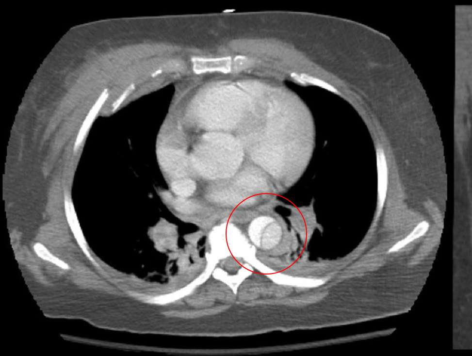

Dissection aortique de type B, coupes axiales

123456789101112131415161718D
Schéma. Type B : la crosse n'est pas disséquée. La pastille jaune marque le siège habituel de la porte d'entrée.
Schéma au niveau de la carène. Le voile du type B est dans l'aorte descendante.
Contours calqués sur la coupe axiale du cliché. Le bouton superpose cette image, opacité réglable. Les deux chenaux sont opacifiés.
Schéma : reins postérieurs dans les loges, artère rénale droite derrière la veine cave, veine rénale gauche devant l'aorte. Le thrombus est un exemple, pas le cliché source.
- 1 Paroi thoracique
- 2 Poumon droit
- 3 Poumon gauche
- 4 Côtes droites
- 5 Côtes gauches
- 6 Sternum
- 7 Vertèbre
- 8 Trachée
- 9 Œsophage
- 10 Veine azygos
- 11 Veine brachiocéphalique gauche
- 12 Veine cave supérieure
- 13 Crosse aortique
- 14 Artère subclavière gauche
- 15 Porte d'entrée habituelle
- 1 Paroi thoracique
- 2 Poumon droit
- 3 Poumon gauche
- 4 Côtes droites
- 5 Côtes gauches
- 6 Sternum
- 7 Vertèbre
- 8 Trachée et bronches
- 9 Œsophage
- 10 Veine azygos
- 11 Veine cave supérieure
- 12 Tronc pulmonaire
- 13 Artère pulmonaire droite
- 14 Artère pulmonaire gauche
- 15 Aorte ascendante
- 16 Aorte descendante
- 17 Vrai chenal
- 18 Faux chenal
- 19 Voile intimal
- 1 Paroi thoracique
- 2 Dôme hépatique
- 3 Poumon droit
- 4 Poumon gauche
- 5 Côtes droites
- 6 Côtes gauches
- 7 Sternum
- 8 Vertèbre
- 9 Ventricule droit
- 10 Oreillette droite
- 11 Ventricule gauche
- 12 Oreillette gauche
- 13 Œsophage
- 14 Veine azygos
- 15 Aorte descendante
- 16 Vrai chenal
- 17 Faux chenal
- 18 Voile intimal
- 1 Paroi abdominale
- 2 Foie
- 3 Rate
- 4 Rein droit
- 5 Rein gauche
- 6 Muscle psoas droit
- 7 Muscle psoas gauche
- 8 Carré des lombes droit
- 9 Carré des lombes gauche
- 10 Vertèbre
- 11 Anses digestives
- 12 Artère rénale droite
- 13 Veine cave inférieure
- 14 Aorte abdominale
- 15 Vrai chenal
- 16 Faux chenal
- 17 Thrombus partiel
- 18 Voile intimal
- 19 Artère rénale gauche
- 20 Veine rénale gauche
Pourquoi le faux chenal est-il plus ou moins opacifié ?
L'hypothèse « c'est l'âge de la dissection » est incomplète. L'ancienneté change le voile et favorise la thrombose, mais elle ne décide pas à elle seule du contraste vu sur une coupe.
Flux. Le faux chenal a en général un flux plus lent et un plus grand diamètre, et il peut contenir des thrombi (ESC 2014, section 6.3.5.2). Son contraste est souvent plus faible, par opacification retardée (Radiopaedia, révision du 1er septembre 2026, consultée le 31 octobre 2026). Une porte de réentrée petite ou absente favorise la thrombose ou l'élargissement du faux chenal (Tanaka, Yoshioka et Abiko, Annals of Vascular Diseases, 25 mars 2020).
Phase d'acquisition. À la phase artérielle, un flux lent peut ne pas se rehausser et mimer un thrombus. La phase tardive, souvent 60 à 120 secondes, montre le rehaussement s'il n'y a pas de caillot : la thrombose est donc surestimée sur la seule phase angiographique (Tanaka 2020 ; Shen, Mastrodicasa, Tse et Fleischmann, Seminars in Roentgenology, 30 juillet 2022). L'ESC 2014 rappelle que l'IRM avec gadolinium distingue un flux lent d'un thrombus, et que des coupes tardives sont recommandées après endoprothèse pour chercher une endofuite.
Ancienneté. Aigu : moins de 14 jours. Subaigu : 15 à 90 jours. Chronique : plus de 90 jours (ESC 2014). Le voile devient plus épais, plus raide et moins mobile au stade chronique (Shen 2022). Les voiles chroniques sont souvent plus épais et plus rectilignes, et la thrombose du faux chenal y est plus fréquente (Radiopaedia, 2026). Une dissection aiguë peut donc être peu opacifiée à la phase artérielle, et une dissection chronique peut rester opacifiée si les réentrées sont larges.
Sur le cliché source, les deux chenaux sont opacifiés, le faux moins que le vrai : ce n'est pas un thrombus complet. La légende du fichier ne précise pas la phase de l'injection.
Schéma dérivé de JasonRobertYoungMD, Descending (Type B Stanford) Aortic Dissection, Wikimedia Commons, CC BY-SA 4.0. Le niveau « aorte thoracique basse » est calé sur la coupe axiale de ce fichier (consulté le 31 octobre 2026). Les autres niveaux sont des schémas. Orientation radiologique : D = droite du patient, à gauche de l'écran. Police Atkinson Hyperlegible, SIL OFL, Braille Institute. Ce dessin est sous CC BY-SA 4.0.
_Aortic_Dissection.PNG){kind=link}